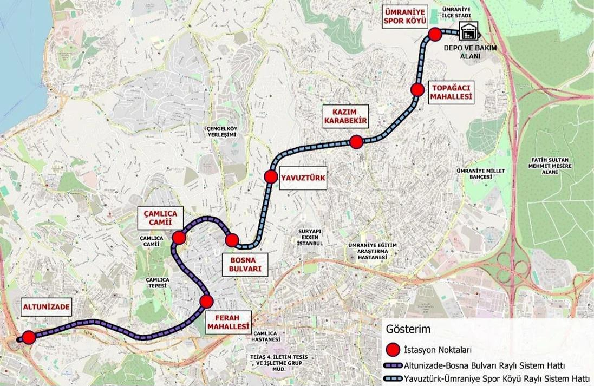
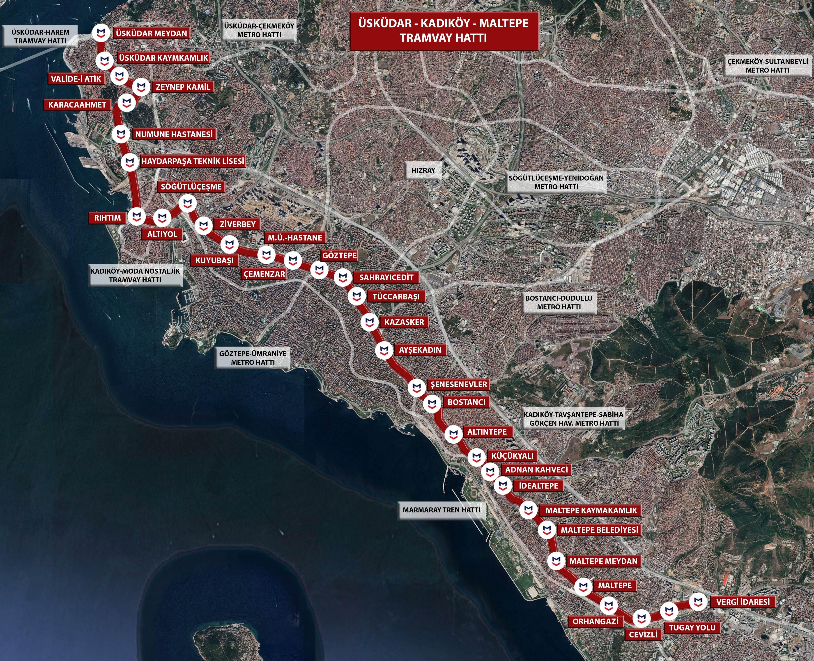

Proje Halindeki Raylı Sistem Hatları
İstanbul Anadolu Yakası'nda projelendirme çalışmaları devam eden raylı sistem hatları.
 M4 Kaynarca - İçmeler Metro Hattı Uzatması
Projelendirme Tamamlandı
M4 Kaynarca - İçmeler Metro Hattı Uzatması
Projelendirme Tamamlandı
Öngörülen İhale Tarihi: 2029 Sonrası
Uzunluk: 5,20 Km
İstasyon Sayısı: 3
2017 yılında Tavşantepe-Tuzla olarak bütün halinde ihale edilen hattın inşa çalışmaları 29 Aralık 2017'de durdurulmuştur. İnşaat yeniden başlatılmaya çalışılmış ancak ödenek yetersizliği nedeniyle başlatılamamıştır.
3 Şubat 2020 tarihinde bulunan kredi ile çalışmalar yeniden başlatılmıştır. 2022 yılında yüklenici firmanın sözleşmeyi feshetmesiyle süreç tekrar sekteye uğramıştır. Tekrarlanan ihaleye Kaynarca sonrası etap dahil edilmemiştir.
Proje güzergahı ağır bir revizyonla D-100 Karayolu takip edecek şekilde güncellenmiştir. BB tarafından 2029 sonrasında inşaatına başlanacak hatlar arasındadır.

 M4-M10 Sabiha Gökçen Hvl. - Kurtköy YHT/ViaPort Metro Hattı Uzatması
Projelendirme Tamamlandı
M4-M10 Sabiha Gökçen Hvl. - Kurtköy YHT/ViaPort Metro Hattı Uzatması
Projelendirme Tamamlandı
Öngörülen İhale Tarihi: Bilinmiyor
Uzunluk: 6 Km
İstasyon Sayısı: 3
08.08.2016 tarihinde projelendirme çalışmaları başlanan hattın Kurtköy YHT/ViaPort istasyonundan sonra M4 ve M10 hatları için yeni bir depo sahası olması planlanmaktadır. Ulaştırma Bakanlığının 2026 bütçe sunumunda yer alan hattın ihale tarihi bilinmemektedir.

 M5 Sultanbeyli - Kurtköy YHT/ViaPort Metro Hattı Uzatması
Projelendirme Tamamlandı
M5 Sultanbeyli - Kurtköy YHT/ViaPort Metro Hattı Uzatması
Projelendirme Tamamlandı
Öngörülen İhale Tarihi: 2029 Sonrası
Uzunluk: 5,4 Km
İstasyon Sayısı: 4
2016 yılında projelendirme çalışmaları başlayan hat, Kurtköy YHT/ViaPort istasyonunun M4 ve M10 hatlarıyla entegre olması planlanmaktadır. BB tarafından 2029 sonrasında inşasına başlanacak hatlar arasındadır.

 M13 Emek - Söğütlüçeşme Metro Hattı Uzatması
Projelendirme Devam Ediyor
M13 Emek - Söğütlüçeşme Metro Hattı Uzatması
Projelendirme Devam Ediyor
2017 yılıunda Yenidoğan - Emek metro hhattı olarak ihale edilen hattın yetersiz yolcu talebi sebebiyle kredi onayı çıkmaamsı üzerine İBB 2022 yılında M13'ü emekten sonra Söğütlüçeşmeye kadar uzayacak şekilde revize etmiştir.18 km'lik uzatmanın 10.7 km'sinin projesi tamamlanmış kalan kısmın projesi devam etmektedir.

 M14 Bosna Bulvarı - Ümraniye Spor Köyü Metro Hattı Uzatması
Projelendirme Tamamlandı
M14 Bosna Bulvarı - Ümraniye Spor Köyü Metro Hattı Uzatması
Projelendirme Tamamlandı
M14 Altunizade - Bosna Bulvarı Metro Hattı'nın uzatması olarak inşa edilcek olan hattın ihalesi yapılmış olmasına rağmen inşaat çalışmaları henüz başlamamıştır.

 M Ümraniye - Ortaçeşme Metro Hattı
Projelendirme Devam Ediyor
M Ümraniye - Ortaçeşme Metro Hattı
Projelendirme Devam Ediyor
İBB tarafından projelendirme çalışmaları başlayan Hat 2026 yılının ağustos ayında Ulaştırma bakanlığına devredilmiştir. Hat devredildikten sonra Türk Alman üniversitesine doğru uzanan bir şube hattı planlanmıştır hattın 2027 yılının ortalarında inşaasına başlanması hedeflenmektedir.

 T Üsküdar - Kadıköy - Maltepe Tramvay Hattı
Projelendirme Tamamlandı
T Üsküdar - Kadıköy - Maltepe Tramvay Hattı
Projelendirme Tamamlandı
Yatırım programına alınması için başvuruda bulunuldu ancak reddedildi.
